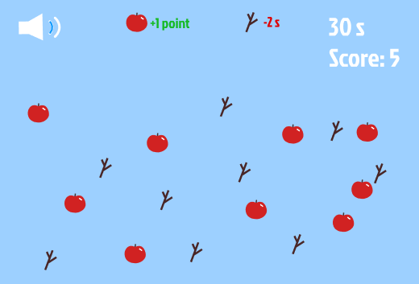

My assigned interaction was time/duration. I experimented with Kaboom.js for the first time and decided to create a game that implemented a timer. I designed the game around the idea of giving the player a certain amount of time to do a task. I came across thisinteractive websitethat inspired me the most. Timers are typically designed to create stress and challenge the player to do their best/complete a task in the time they are given. I also really liked the cute design of the website which inspired and motivated me :>
I tried to make the opening page to be playful, so I included animations and movement in my website because those revolve around time as well.
These were the initial layout designs for the game before I started coding. I was having trouble creating the timer using Kaboom and couldn't find any similar references online for what I wanted to create. Instead, I used regular javascript to code the timer. I ended up liking the time bar better because the player can visually see how much time is left and a lot more noticeable.
A few things I'd do differently if I had more time:
- Making the sprites spin and have them come out from the edge of the screen only
rather than anywhere on the screen.
- Figure out how to make the sticks decrease the timer.
- Make a small pop up for the rules and the end of the game instead of a seperate html.
- Make a pop up for when the game ends instead of using alert().
- Have the cursor be a basket for the apples when hovering.
- Add something around the apple on the landing page.
My experience with using kaboom.js:
I'm really glad I tried it! It's very beginner friendly and had fun
playing around with it. But most of the games i've seen
using this library aren't time based games. I would definitely try using kaboom again
if I were to make a game like Flappy Bird, Doodle Jump, Space Invaders, etc...
kaboom.js.com
w3schools.com
docs.replit.com
stackoverflow.com
intro to kaboom